Eastern garden
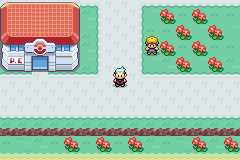
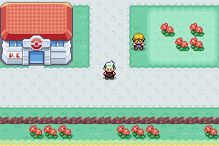
Existing Kanto flowers and mown-grass tiles now form grouped gardens at the west entrance, pond and eastern green. The southern flowers form separated clusters. This is the first of three map-art stages.
Five-minute review: compare these three views in daylight, then switch to night. Judge the grouping, spacing and readability around the player and follower.


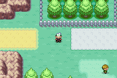
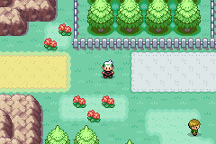
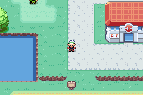
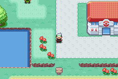
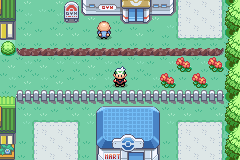
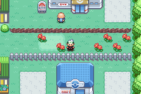
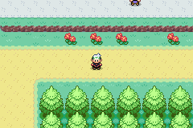
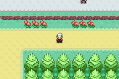
These are source-map renders without actors. The comparisons above are native 240×160 emulator captures.
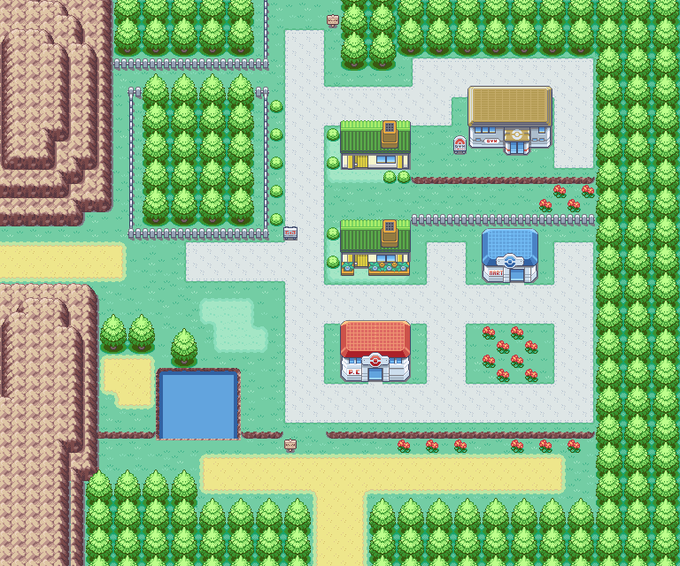
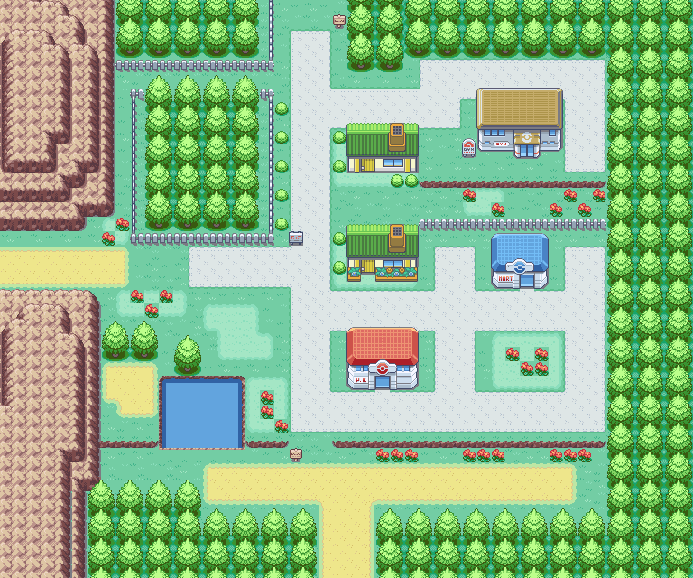
59 map cells changed. 7 local compositions reuse existing tile words; bitmap art and palettes are unchanged.
All 1,920 cells preserve collision, elevation and nonvisual attributes. 65 protected gameplay cells are untouched. All five door approaches and three entrances keep the same walking component. Four routes sharing this tileset render identically.
132 focused assertions passed, plus 50 full regression suites (1,331 assertions). All 15 paired runtime background-palette snapshots match. The prepared save also passes on the unpatched delivery ROM.
ROM and capture provenance · Map audit · Exact tile edits · Full regression result · Player and follower on flowers
The fixture creates a synthetic later-story state for ordinary entry/exit checks; it is absent from the delivery ROM. The existing catch-tutorial regression separately exercises the early-story sequence.
Next: #347 path transitions, then #348 building frontages.